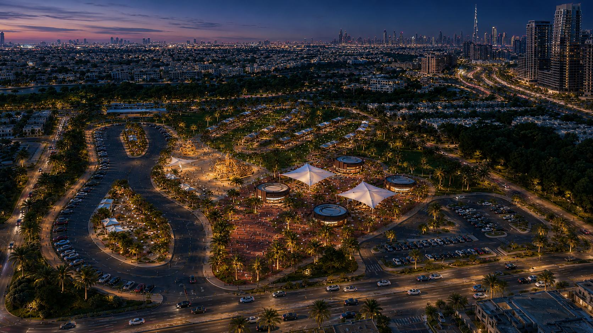
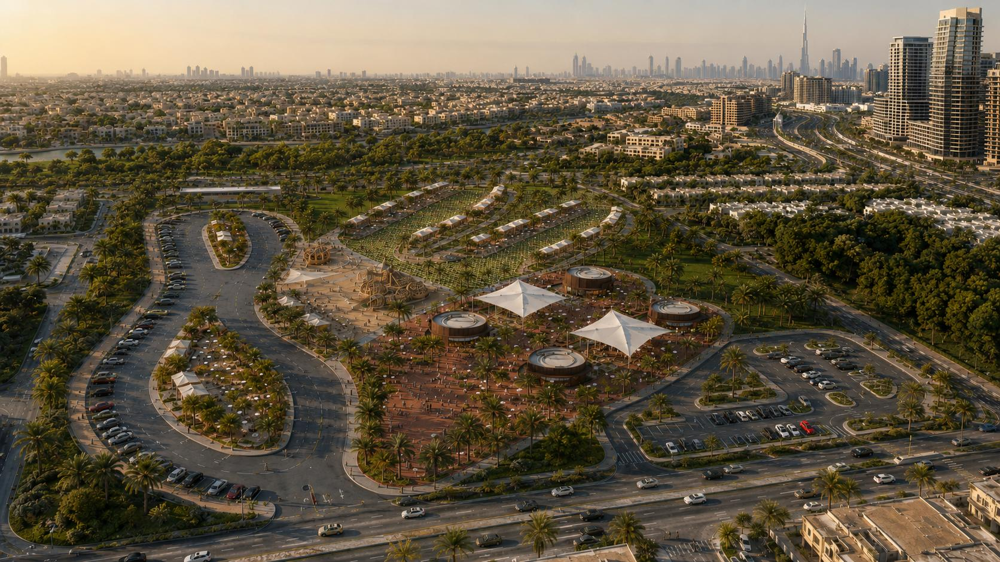
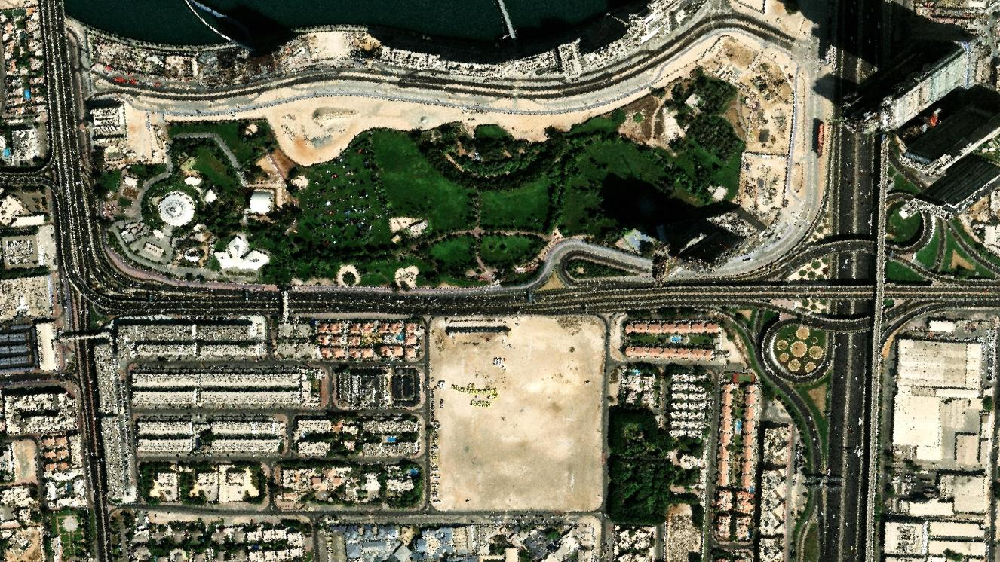
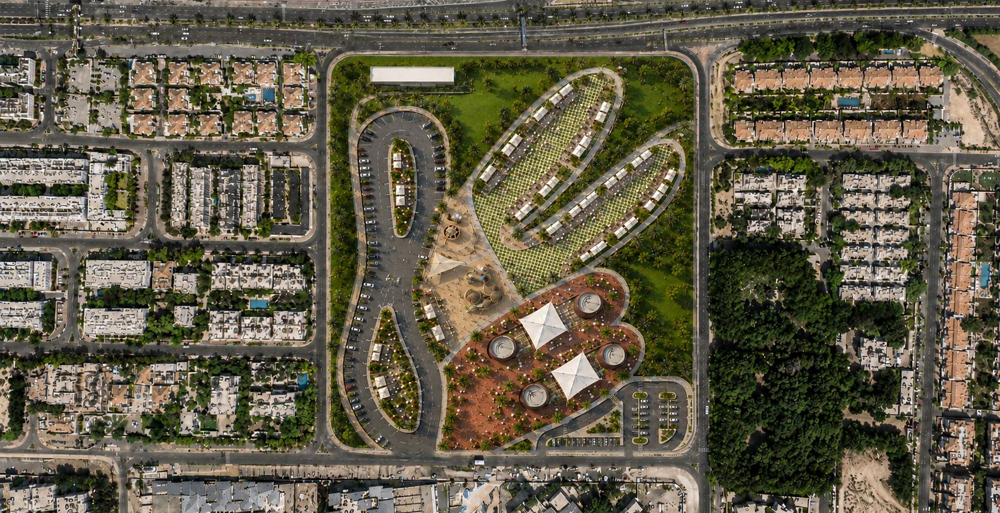
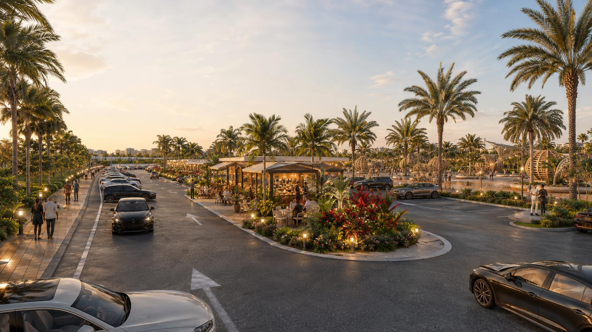
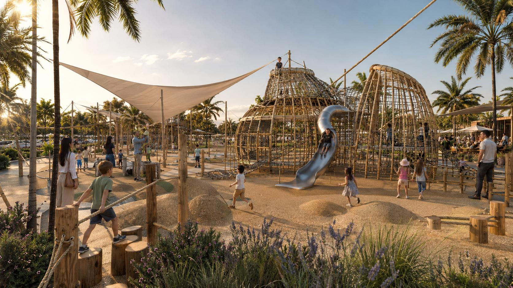
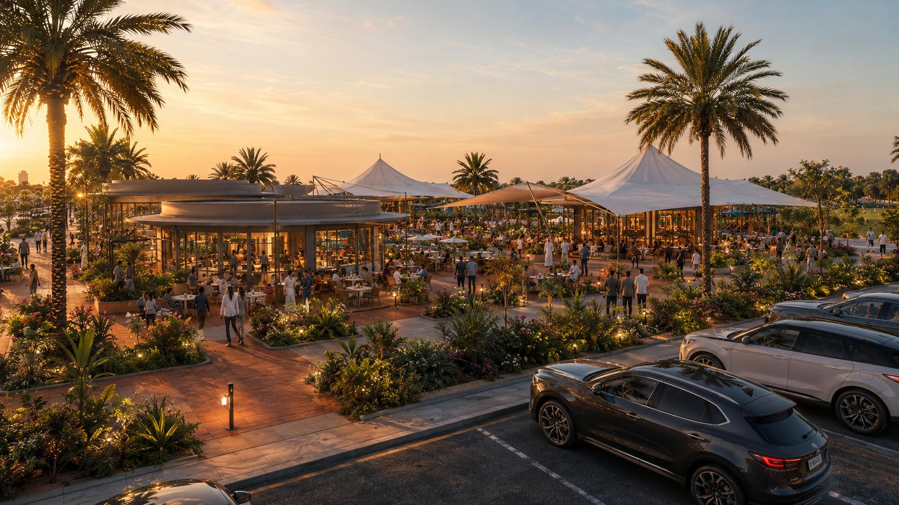
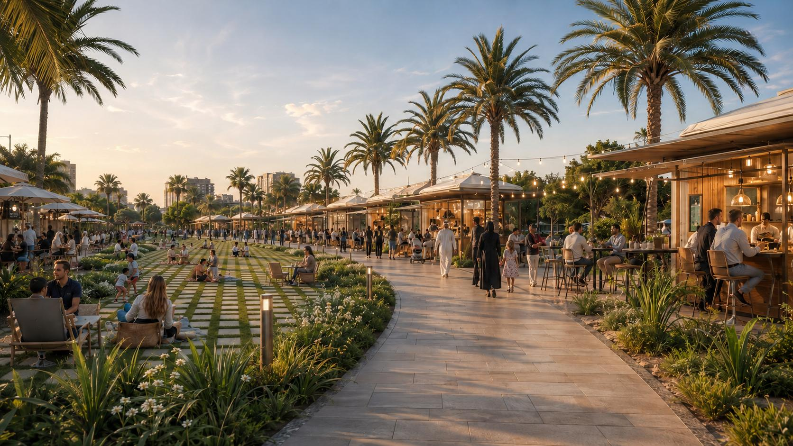

Thermal Comfort First
Extensive shading, tree canopies, water features and breezeways ensure year‑round outdoor usability.

Al Safa · Dubai · United Arab Emirates
A destination lifestyle and food‑and‑beverage park shaped by the Three‑Finger Salute — blending cultural symbolism, family leisure, and a welcoming civic landscape.
Inspired by the Three‑Finger Salute introduced in Dubai in 2013 — a gesture of unity and optimism that represents “Win. Victory. Love.” The park spatially translates the three raised fingers into three green park fingers, connected by a civic heart and arrival spine that bring people together for leisure, celebration, and community.
Extensive shading, tree canopies, water features and breezeways ensure year‑round outdoor usability.
A focused arrival spine and parking layout provide intuitive wayfinding and a smooth, welcoming flow.
Play zones, lawns and activity nodes create safe, inclusive experiences for all ages.
Three park promenades unify F&B, leisure and events, with lush landscaping and views.
Low‑rise edges buffer villa areas while creating a destination with a memorable civic heart.

“A culturally rooted, welcoming hand‑derived plan that organises arrival, public life, shade, and outdoor comfort.”
A strategically located inner‑Dubai site shaped by Safa Park, surrounding villa communities, and a distinctive three‑finger civic park concept — minutes from the Sheikh Zayed Road corridor with open outlook toward Downtown and Burj Khalifa.

Celebrate Safa Park edge with a welcoming arrival, shaded walkways, and strong crossing and parking interface.
Landscape buffers and low‑scale built form to minimise impact and support service and access needs.
Maintain privacy with green buffers and setbacks, with low‑rise scale and calm interfaces to homes.
Frame and protect long views toward the Downtown and Burj Khalifa skyline with elevated terraces and viewing points.
Adjacent to Safa Park and major corridors with strong city‑scale access and visibility.
Direct adjacency to Safa Park provides cooler microclimate, green outlook and visitor spillover potential.
Traffic, noise and residential sensitivities require careful buffering, scale control and landscape‑led design.
Outdoor thermal comfort is the defining design KPI for a year‑round hospitality‑led park in Dubai. The design works with the prevailing north‑westerly Shamal breeze, the sun path, and the seasons — not against them.
Thermal comfort drives use, dwell time and commercial success.
Design for shade first; lateral shade alone is not enough.
Synergistic strategies create cooled outdoor rooms and deliver resilient comfort all year.
Cloudbursts and episodic downpours require robust drainage capacity and quick recovery.
Dust‑resilient planting, smooth surfaces and easy cleaning regimes are essential.
Keep the metaphor in service of comfort — finger orientation follows breeze and shade, and the form avoids unshaded west‑facing dining and wind‑funnelling corridors.

The central plaza anchors social life with dining, events, and community moments. It is the park’s heart and visual focus.
A graceful arrival route that welcomes visitors, organises circulation and parking, and connects the city to the park’s central heart.
Three landscaped promenades extend outward, offering generous lawns, F&B terraces, and welcoming edges for strolls and relaxation.
Shaded corridors and pockets become comfortable outdoor rooms that connect the fingers and encourage lingering.
A warm arrival and inviting core that feels open, safe, and easy to belong.
The three‑finger structure guides movement with intuitive flow and clear orientation.
Shade, breeze, and protection shape every space for year‑round outdoor enjoyment.
A successful destination park must serve multiple user groups across very different times of day, seasons, and cultural rhythms — designed for multiple personas, evening comfort, and family infrastructure with universal access.
Safe, shaded play; pram access; casual dining; toilets and nursing rooms — late afternoon & evening, weekend mornings.
Premium restaurants, ambience, skyline views, evening promenade — evenings and weekend brunch.
Shaded café seating, Wi‑Fi, quieter zones — mornings and midday.
Shaded walking and jogging loops, green respite, dog‑free lawns — early morning & evening.
Iconic setting, photographic skyline views, variety of F&B — evenings, weekends and the cool‑season peak.
Efficient back‑of‑house, service access, shaded staff routes — all operating hours.
Quiet exercise, walking loops, calm café starts
Café, remote work, errands and strolls
Shaded refuge, indoor‑outdoor F&B, family lunch
Family play, social gatherings begin
Dining, events, full park life — the peak
The programme combines destination dining, family leisure, and landscape infrastructure within a planning‑led park typology. Landscape is the comfort engine — high shade, water, and planting drive climate performance and visitor comfort.
Premium destination dining — the anchor. Best skyline orientation, shaded west exposure, indoor + shaded terrace, full back‑of‑house service.
All‑day, lower‑committed social anchors. Two nodes near the arrival spine and play areas, with skyline and rooftop outlook.
Clustered casual F&B — variety and footfall engine. Linear bars forming braided breeze‑streets; flexible tenancies; shared seating; consolidated services.
Convenience stop and pick‑up at the car‑park interface — first and last touchpoint, fully shaded.
Family draw and dwell‑time driver. Central, shaded, safe, overlooked by café and restaurant seating; soft‑fall surfacing; age‑graded play; nearby toilets and nursing.
The connective tissue and comfort engine. North side shaded; clear pedestrian desire‑lines; accessible lawns at entries; event provision; service separation.
Distributed for walking‑distance access; screened plant and service yards; SZR‑side utilities at concept stage.
★ Parking will likely be the binding planning constraint on a premium central plot — confirm with the governing authority at masterplan stage.
Four signature zones — each tuned to its own rhythm of arrival, play, dining, and strolling.

A shaded, convenient first touchpoint where the arrival spine meets casual F&B — grab‑and‑go ease wrapped in planting and lantern light.

Central, shaded and overlooked — age‑graded adventure play with soft‑fall surfacing, sail canopies, and café seating within easy sight of every swing and slide.

Premium destination dining under sculptural canopies — skyline outlook, shaded terraces, and the evening buzz that anchors the park’s civic heart.

Braided breeze‑streets of kiosks and pavilions along palm‑lined lawns — the variety and footfall engine of everyday park life.
The project combines a rare strategic location with clear environmental and operational constraints that must be actively designed around.
Comfort‑led design principles must now be validated through targeted technical studies before concept freeze — to confirm feasibility, de‑risk approvals, and protect the quality of the outdoor experience.
A welcoming civic landmark where Dubai gathers — shaded, generous, and open to all.